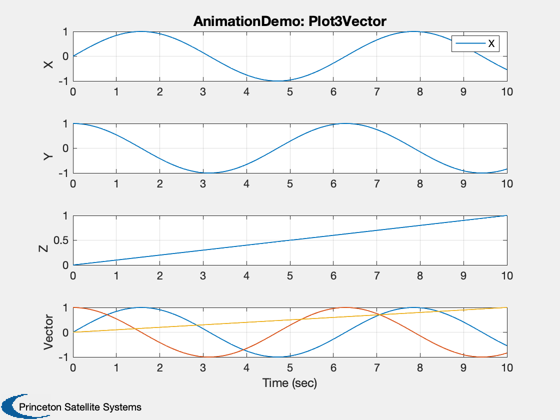
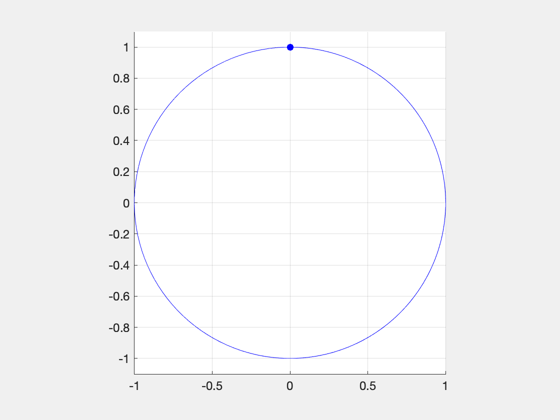
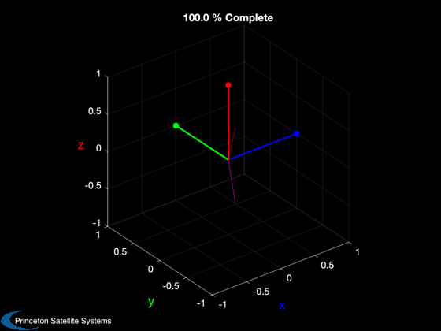
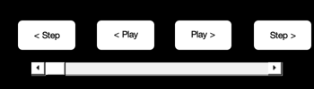
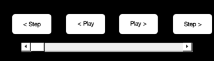
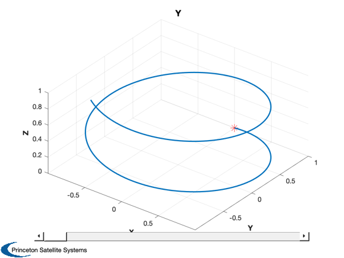
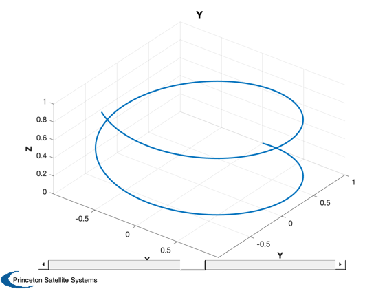

Visualization and animation of 3D vector data
Explore different ways to animate a set of 3D vector data. A general vector that is a function of time is created, and a quaternion that transforms from a fixed unit vector to that changing vector is calculated, and both are visualized.
See also AnimateCube, AnimateVectors, Animator, PlaybackControls, Plot3D, Plot3Vector, SliderBar, AnimQ, U2Q, Unit
Contents
%-------------------------------------------------------------------------- % Copyright (c) 2017 Princeton Satellite Systems, Inc. % All rights reserved. %-------------------------------------------------------------------------- % Since version 2017.1. %-------------------------------------------------------------------------- nPts = 201; t = linspace(0,10,nPts); x = [sin(t);cos(t);zeros(1,nPts)]; r = [sin(t);cos(t);t/10]; u = Unit(rand(3,1)); q = U2Q( Unit(r), repmat(u,1,nPts) );
Plot3Vector
Not an animation, but a useful way to visualize a time-varying vector
Plot3Vector( t, r, 'AnimationDemo: Plot3Vector' );
Warning: Ignoring extra legend entries.
Animator
Add an animation menu to a figure with a 3D plot of the data
Animator( [], r );
AnimateVectors
Animate one or more time-varying vectors. Uses Coordinates to create the black background with the colored axes. You can replay the animation using the "Animate" menu.
AnimateVectors( x, 'm', r, 'r' );
AnimQ
Animate a quaternion, which is functionally similar to AnimateVectors except the coordinate axes themselves will rotate.
AnimQ( q );

AnimateCube
Animate a quaternion history using a recangular prism to represent a physical object like a satellite. If the time is appended after the quaterion, it will also be displayed as text at the top of the figure. The playback controls are a separate window that allow you to replay or step the animation.
tag = AnimateCube( 'run', [1 2 3], [q;t] ); callback = @(x) AnimateCube( 'update', tag, [q(:,x);t(x)] ); PlaybackControls( 1, nPts, 1, callback, 1, 'AnimateCube Controls' );
 
 Plot3D with slider bar
The slider can "animate" anything you can write a callback for, in this case moving a marker on the line, similar to Animator.
[h,hL] = Plot3D(r,'X','Y','Z'); hold on; hM = plot3(0,1,0,'r*','markersize',12); y = get(h,'position'); callback = @(x) set(hM,'xdata',sin(x),'ydata',cos(x),'zdata',x/10); SliderBar( 0, 10, 0, callback, [], [.1 0 .8 .1], h );
Another Plot3D with a slider changing the view
[h2] = Plot3D(r,'X','Y','Z'); hA = gca; callback = @(x) view(hA,35,x); SliderBar( -90, 90, 0, callback, 'Slider View', [.1 0 .8 .1], h2 ); %-------------------------------------- % $Date$ % $Id: 8f08749564c5897192724611d3f23089fab94122 $